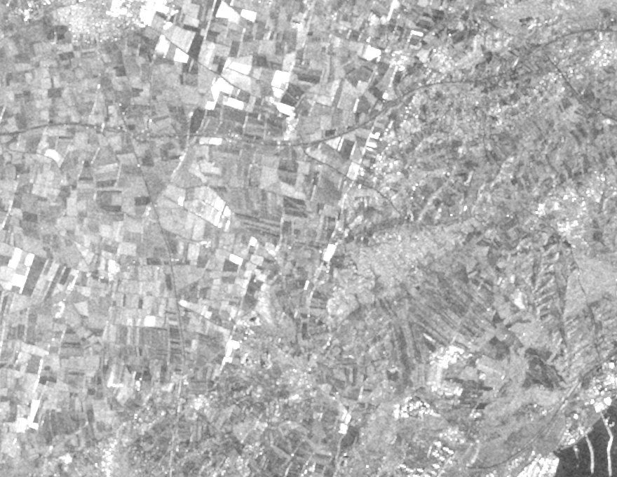
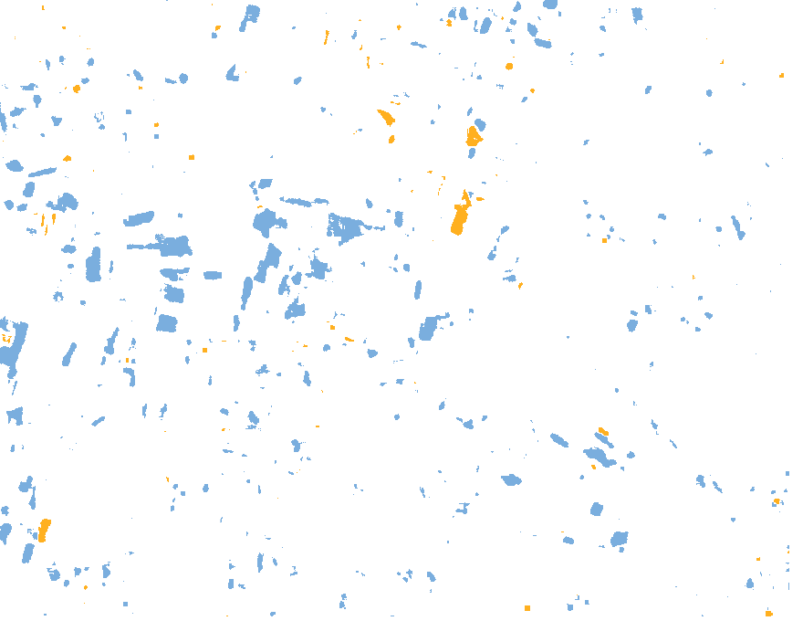
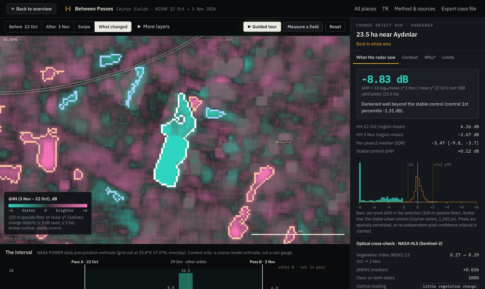

00 NASA Space Apps 2026 · Dancing with the SARs
Rain fools radar.
Between Passes shows what really changed.
NASA's new NISAR satellite maps the ground through cloud and darkness every 12 days. But wet soil looks brighter to radar and dry soil darker, so its change maps fill up with weather. Between Passes checks every change against NASA's soil-moisture and rain data, and highlights what the weather can't explain.




01 The problem
Radar sees through cloud.
Not through weather.
Radar satellites are how the world watches the ground when clouds hide it: floods, harvests, forests cut down, new buildings, damage after disasters. They work by comparing two passes and flagging what changed.
But water changes how the ground reflects radar. After rain, soil looks brighter. As it dries, darker. So a change map made after a rainy week lights up with change that is only weather, and the real changes hide inside it.
I measured how big this is, with NASA data, at 147 random places NISAR passed over twice.
How the filter works
- 1Measure. Two NISAR passes, 12 days apart, from the identical orbit. Everything that changed by 3 dB or more (twice or half the radar echo) is flagged.
- 2Ask the weather. NASA's SMAP satellite measures how wet the soil was on both days. NASA POWER gives the rain in between.
- 3Sort. Wetter soil can only make radar brighter, drier soil only darker. A change that matches the weather could be the weather. A change that goes against it can't be: something really changed there.
The rules were written down and published before I ran them on any place: the filter's rules. The physics behind step 3 is tested too: across 147 random places, NISAR's change followed SMAP's soil-moisture change, twice, with rules written first (the worldwide test).
02 Worldwide
148 places. 39 countries. Click any of them.
Every dot is a real 10 × 10 km patch that NISAR saw twice, 12 days apart, picked at random. The filter sorted each one.
Natural Earth land · Equal Earth projection · dot size = share of land that changed
Site-scale: a 10 km patch mixes fields, towns and water, and SMAP measures in 9 km cells, so a local shower can look like "real change". The filter says where to look, not what happened there. Full statistics of the worldwide test →
03 Up close
Ceyhan, my home region.
Farmland on the Çukurova plain, southern Türkiye. Between NISAR's passes on 22 October and 3 November 2026, the first autumn rain fell. 636 fields changed. Every number here can be checked by hand in the lab, below.
Where to look first
The fields that got darker while the soil got wetter. The weather can't explain them. Largest first.
Click a field to open it in the lab, zoomed in with its evidence ↗

Lab The full instrument Explore every field yourself. Swipe between the two passes Six map layers, including optical (NASA HLS) Tap any of 636 changed fields for its evidence Draw your own field and measure it live Rain timeline and change census Export the evidence as a file or report Open the lab, with a guided tour →04 The proof
Then I predicted the next passes. Before NASA released the data.
If Ceyhan's bright fields were just wet soil, they will fade as the soil dries. If they were ploughed, they will stay bright. NASA's SMAP satellite says the soil has dried since.
I wrote down exactly what three upcoming NISAR passes will show and published it on GitHub, with a timestamp, before NASA released any of that data. The scores appear here automatically, whatever they say.
05 Run it yourself
Any place NISAR has flown.
One command finds two NISAR passes over any point on Earth, reads only the part of each file it needs, asks SMAP and POWER about the weather, and writes the filtered change map and a report.
All you need is a free NASA Earthdata account. Everything is open source.
Example: in western Kansas, 50 mm of rain fell between two passes, and a normal change map flags a third of the land as changed. The filter shows all of it went the way the soil moisture did: it could be the weather.
python scripts/bp_check.py --lat 38.75 --lon -101.33Setup: docs/REPRODUCE.md · code: github.com/deniz2077/between-passes